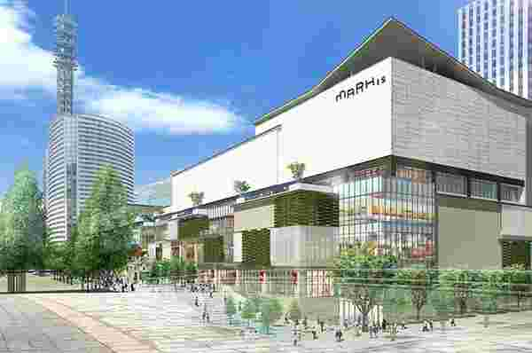
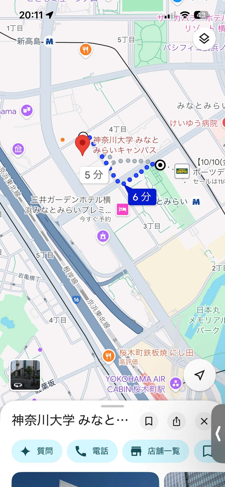

１ 定点観測
観測場所 MARK IS みなとみらい入口

観察日 10/21 13:55~14:15
観察時間 20分
観察対象 MARK ISみなとみらい入口付近の人々の靴
２ 移動観察
観察場所 神奈川大学～MARK ISみなとみらい入口

観察日 10/21 13:44~13:51
観察時間 ７分
観察対象 神奈川大学みなとみらいキャンパス～MARK ISみなとみらい入口に行くまでの人々の靴
考察
両方の観察ではともに
・茶系は高齢層や女性が好んで着用していた
・白系は老若男女問わず履かれていた
・黒系はスーツの会社員の革靴や普段着の靴など場面を問わず、老若男女に履かれていた
・原色な赤は男児が多く運動用として使われていた？
ピンクは女児が多い
くすんだピンクは大人の女性のスニーカーに多かった
・青系はランニングシューズ多めで、ラフな格好に多い
ことが分かった